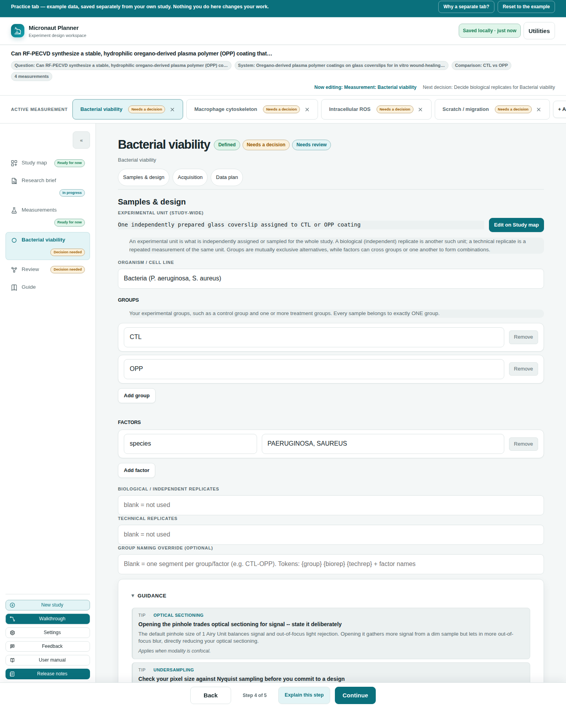
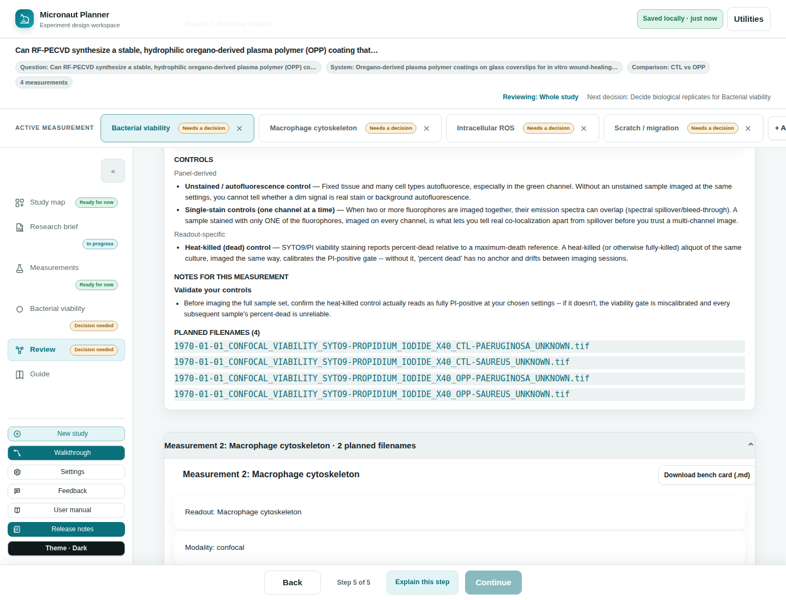

Chapter 7
Conditions, Groups & Controls
How the groups you set up turn into a real table of conditions and filenames, and how Micronaut decides which controls to suggest — and why it suggests each one.
What you'll be able to do
- Tell apart groups and factors, and know why they behave differently.
- Read the condition table Samples & design builds from your groups, factors, and replicate counts.
- Understand replication vocabulary: biological/independent replicates versus technical replicates.
- See where the controls Micronaut proposes on Review actually come from, and what fact drives each one.
- Read a suggested control's stated reason, and know that rules propose but never decide for you.

Groups: mutually exclusive alternatives
Groups are your experimental groups — a control group and one or more treatment groups, for example. Every sample belongs to exactly one group; groups are, by construction, mutually exclusive alternatives, never something that crosses with itself. You set them on a measurement's own Samples & design page (see Measurements Registry for how a new measurement seeds its groups from an existing one, and the "copy to measurements that have none" shortcut).
Add a group with Add group; each one gets its own name box and a Remove button. An observational study — one that isn't comparing groups at all — may legitimately have none.
🔍 Why it works this way. Groups used to be typed as one comma-separated string. Two people editing the same list at different times, or typos in the separator, made it easy to end up with a phantom empty group or a name that silently didn't match what Samples & design expected. Naming each group in its own box, one row at a time, removes that whole class of mistake.
Factors: axes that genuinely cross
Factors are the other axis: something in your experiment that varies on its own, separate from your groups — genotype or timepoint, for instance. Unlike groups, a factor's levels genuinely cross with everything else: a sample really can be both "WT" and "24h," so a genotype factor and a timepoint factor multiply out into every combination. Groups do cross with factors (a 2-group study times a 2-level genotype factor is a legitimate 2×2), but groups never cross with each other — a study either has one group axis or none.
Add a factor with Add factor: give it a name, then a comma-separated list of levels (e.g. "WT, KO"). Each factor gets its own Remove button too.
🔍 Why it works this way. Expressing your groups as an ordinary factor is exactly what used to let a filename read as somehow both "control" and "the 50 mM group" at once — nonsense that a genuinely singular group axis makes unrepresentable, rather than merely discouraged by convention.
Two independent replicate axes
Below groups and factors sit two optional, independent number fields:
- Biological / independent replicates — how many independently assigned or sampled units you have.
- Technical replicates — repeat measurements of the same unit.
Leave either blank if it doesn't apply — some modalities (SEM/TEM, Raman) commonly use neither, and a blank field means "not used," never a silent default of 1.
How conditions are built
Samples & design expands your groups, factors, and replicate counts into a concrete table of conditions — every real combination your design implies, one row each. The row order is fixed and meaningful: group outermost (slowest-varying), then each factor in the order you declared it, then biological replicate, then technical replicate innermost (fastest-varying) — so the same design always produces filenames in the same, predictable sequence.
Above the table, a box labelled Every file starts with shows the base filename stem every row in this measurement shares — the part that doesn't change row to row — so you can see what's common before scanning what differs between rows.
Each condition row shows a short summary of that row's group/factor/replicate values, the sample id it resolves to, and the full planned filename, built by the same naming engine the Data plan step itself uses — so a row here can never disagree with what Data plan would actually produce (see Validation & Naming).
⚠️ Careful. The condition table refuses to materialize more than 1,000 rows, and a study is separately capped at 50 measurements — an oversized design (an extra factor added by mistake, a huge replicate count) fails with a visible issue rather than silently hanging on a cartesian product nobody meant to build.
💡 Tip. With zero factors and zero group levels, the design still expands to exactly one unconditioned row — so an empty condition table always means a real issue is listed just above it, never "you haven't started yet."
Where controls come from
On Review, each measurement gets a list of suggested controls — panel-derived and readout-specific — with a stated reason attached to every one. These are not typed in by hand: they come from a rules knowledge base, evaluated against facts your measurement's Acquisition and readout answers already establish. Micronaut never assumes "no controls needed" from silence — an empty controls list is always shown as its own explicit sentence, never left blank.

Two kinds of control rule exist, and both key off facts your Acquisition panel already derives (see Acquisition & the Spectral View):
| Kind | Keys off |
|---|---|
| Panel-derived | Facts about your fluorophore panel itself — whether any markers are declared, how many resolved fluorophores you have, and whether an antibody is actually involved. |
| Readout-specific | The specific readout you've described (bacterial viability, ROS, macrophage cytoskeleton, scratch migration, and so on) — a recognized readout unlocks readout-specific controls; an unrecognized free-text answer is respected, not overridden. |
The panel-derived suggestions, and the reasoning behind each
| Suggested control | Fires when… | Why |
|---|---|---|
| Unstained / autofluorescence control | Any markers are declared at all. | Fixed tissue and many cell types autofluoresce, especially in the green channel — without an unstained sample imaged at identical settings, you can't tell a dim real signal apart from background. |
| Single-stain controls (one channel at a time) | More than one fluorophore is declared. | Two or more fluorophores imaged together can spectrally spill into each other's channel — a sample stained with only one of them, imaged on every channel, is what lets you tell real co-localization apart from spillover. |
| Fluorescence-minus-one (FMO) controls | More than two fluorophores are declared. | Past about three colors, spillover from every other channel can shift where a real positive/negative boundary sits — an FMO sample (everything except the one you're gating on) reproduces that shifted background so your gate stays honest. |
| Secondary-antibody-only control | The panel involves an antibody (direct or indirect conjugation). | For indirect immunofluorescence, the secondary antibody can bind nonspecifically or the sample can autofluoresce at its wavelength — omitting the primary but keeping the secondary isolates that background. |
| Isotype control | The panel involves an antibody. | A same-species, same-isotype antibody with no specificity for your target tests whether staining reflects real target binding or nonspecific antibody binding (e.g. Fc receptor binding). |
| Biological specificity control | The panel involves an antibody. | An isotype control only rules out nonspecific antibody binding — a blocking-peptide competition, a knockdown/knockout, or a known-negative sample confirms the signal tracks the real biology, not just the reagent. |
🔍 Why it works this way. Every antibody-gated rule above keys specifically on whether an antibody is involved — a fact Panel assembly's conjugation modes make precise (see Acquisition & the Spectral View). A phalloidin-only or genetically-encoded-only panel, with no antibody anywhere in it, will not be told to run an isotype control just because it has markers at all.
The readout-specific suggestions
| Readout | Suggested control | Why |
|---|---|---|
| Bacterial viability | Heat-killed (dead) control | SYTO9/PI viability staining reports percent-dead relative to a maximum-death reference — a heat-killed aliquot, imaged the same way, calibrates the PI-positive gate. |
| ROS | H2O2-treated positive control | A hydrogen-peroxide-treated sample gives DCF a known, strong oxidative signal, confirming the probe is loading and responding at all. |
| ROS | NAC-treated (antioxidant) negative control | N-acetylcysteine scavenges reactive oxygen species and should suppress the DCF signal — if it doesn't, the readout may not actually be tracking oxidative stress here. |
| Macrophage cytoskeleton | Untreated / vehicle reference | Phalloidin staining shows the actin architecture at one moment, which only means something compared against an untreated or vehicle-only baseline under identical settings. |
| Scratch migration | t=0 scratch reference image | Closure is measured as a change from a starting wound area, so every scratch needs its own image taken immediately after scratching, before any closure could have begun. |
| Scratch migration | Mitomycin C proliferation-blocked control | A scratch can close by migration or by proliferation into the gap — a mitomycin-C-treated control closing more slowly is what separates the two. |
💡 Tip. Choosing a recognized readout is what unlocks its matching controls — an unrecognized, free-text readout answer is respected exactly as typed, never silently replaced, but it also won't trigger readout-specific suggestions the app has no rule for.
Rules propose, you dispose
Every suggested control on Review carries its own reason, in full sentences — never just a name with nothing to explain it. That reasoning is deliberate: a control the researcher doesn't understand is a control they'll eventually delete from their protocol out of confusion, so each rule's "why" is written to actually be read, not just checked off. Nothing here is applied to your study automatically or blocks you from proceeding — these are suggestions for you to plan into your protocol, not fields Micronaut fills in or a gate it enforces.
🧪 Try it. Open the example study in its practice tab, then on its Acquisition step add a second, unrelated fluorophore to a single-marker panel. Reopen Review and watch the Single-stain and (past two) FMO control suggestions appear — each with its own stated reason, keyed to the fact you just changed.
Check yourself
Your design has a "Control vs. Treatment" group and a separate "genotype" factor with levels WT and KO. Do these two axes multiply together, or does the app treat them as one combined group?
They multiply — groups cross with factors legitimately (here, a 2×2), because a factor's levels genuinely apply to every group. Groups themselves never cross with each other; a study has one group axis or none.
A measurement uses only a genetically-encoded GFP fusion and phalloidin — no antibody anywhere. Will Review suggest an isotype control?
No. Isotype, secondary-antibody-only, and biological specificity controls all require an antibody to be involved (direct or indirect conjugation), and neither conjugation mode here qualifies.
You've entered five different fluorophores on one measurement. Which panel-derived controls should you expect to see, beyond the unstained control?
Single-stain controls (more than one fluorophore) and fluorescence-minus-one controls (more than two) — both trigger well before five, so both should appear.